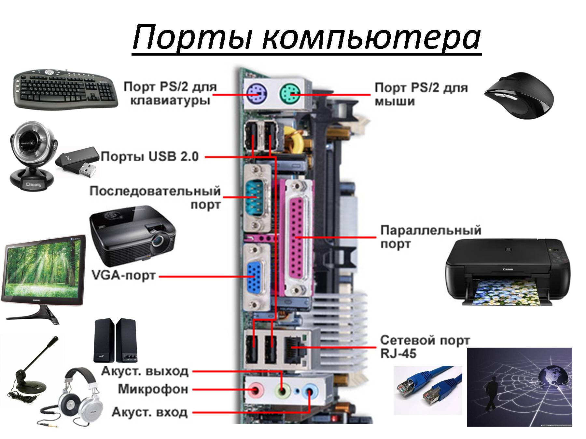

Внутреннее устройство
.webp)

- Материнская плата (Motherboard) Описание: основная плата, на которую монтируются все остальные компоненты. Обеспечивает соединение между процессором, оперативной памятью, видеокартой и другими устройствами. Функции: Подключение и взаимодействие всех компонентов системы. Обеспечение питания для всех компонентов. Поддержка расширяемости (слоты для видеокарт, звуковых карт и других плат).
- Процессор (Central Processing Unit, CPU) Описание: Главный вычислительный блок компьютера, который выполняет инструкции программ. Функции: Выполнение арифметических и логических операций. Управление работой других устройств и компонентов. Выполнение многозадачности.
- Оперативная память (Random Access Memory, RAM) Описание: временная память, которая хранит данные и инструкции, необходимые для работы текущих задач и программ. Функции: Быстрый доступ к данным, которые используются процессором. Обеспечение временного хранения данных и инструкций.
- Накопитель данных Жесткий диск (HDD): Описание: механический накопитель, использующий магнитные диски для хранения данных. Функции: Хранение больших объемов данных. Твердотельный накопитель (SSD): Описание: накопитель, использующий флеш-память для хранения данных. Функции: более высокая скорость чтения/записи по сравнению с HDD, надежность и меньшая потребляемая мощность.
- Видеокарта (Graphics Processing Unit, GPU) Описание: Компонент, который отвечает за обработку графики и видео. Функции: Обработка и вывод изображений на экран. Обработка графики для игр и других ресурсоемких приложений.
- Блок питания (Power Supply Unit, PSU) Описание: Устройство, которое преобразует переменный ток из сети в постоянный и распределяет его по компонентам ПК. Функции: Обеспечение питания для всех компонентов системы. Защита от перепадов напряжения и короткого замыкания.
- Корпус (Case) Описание: Конструкция, в которой размещены все компоненты ПК. Функции: Защита компонентов от механических повреждений и пыли. Обеспечение вентиляции для охлаждения системы.
- Системный вентилятор (Cooling System) Описание: Вентиляторы и другие устройства для охлаждения компонентов, таких как процессор и видеокарта. Функции: Поддержание оптимальной температуры компонентов для предотвращения перегрева.
- Дополнительные устройства Оптические приводы: чтение и запись данных на CD/DVD/BD. Звуковые карты: Улучшают качество звука в ПК. Сетевые карты: обеспечивают подключение к сети (Ethernet и Wi-Fi).
- Порты и интерфейсы USB, HDMI, VGA, DisplayPort и др.: порты, которые позволяют подключать внешние устройства, такие как мыши, клавиатуры, мониторы и принтеры.
